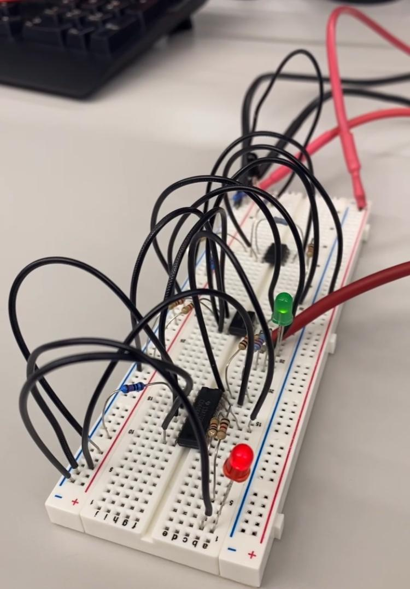
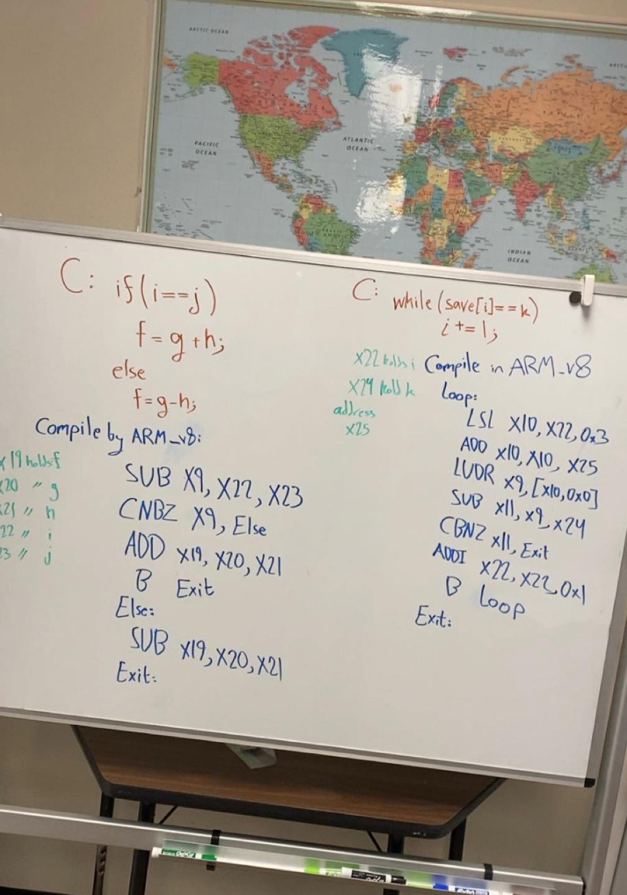
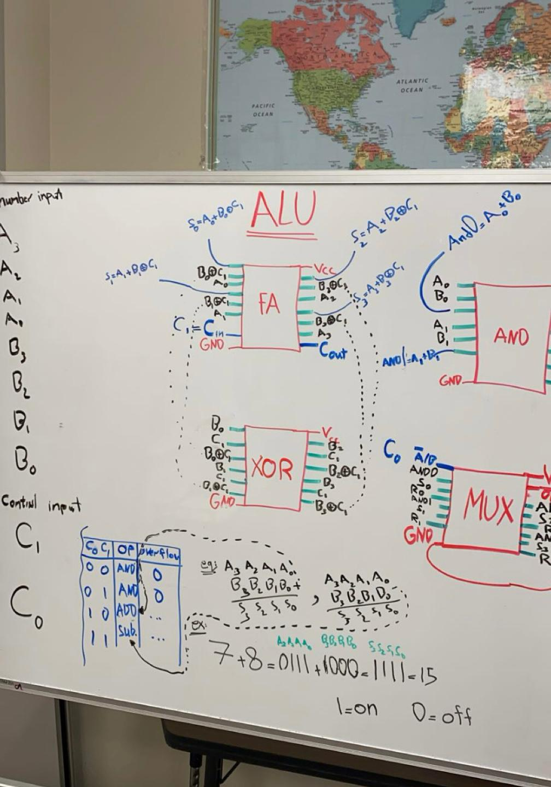

Portfolio
Selected technical work and interests focus on hardware-oriented design, with an emphasis on system-level thinking, real-hardware validation, and clear communication of results. I aim to demonstrate how design decisions are made, how behavior is tested and verified in practice, and how technical outcomes are documented in a structured and understandable way.
Featured Hardware Work
Signal Detection & Digital Output Circuit

This build demonstrates how a real-world input can be turned into a clean, reliable digital signal.
The circuit is designed around the idea of comparing an input level to a reference level so the output
changes state only when the input crosses a threshold.
A major focus of this project was making the behavior stable and predictable: choosing resistor values to set the correct operating point, organizing wiring to avoid mistakes, and verifying output behavior using measurements instead of guessing.
Circuits like this are useful in practical systems whenever a sensor or analog signal needs to become a digital “YES/NO” signal that other logic can safely use. It is a strong example of bridging physical inputs with digital logic behavior.
A major focus of this project was making the behavior stable and predictable: choosing resistor values to set the correct operating point, organizing wiring to avoid mistakes, and verifying output behavior using measurements instead of guessing.
Circuits like this are useful in practical systems whenever a sensor or analog signal needs to become a digital “YES/NO” signal that other logic can safely use. It is a strong example of bridging physical inputs with digital logic behavior.
4-Bit Arithmetic Logic Unit (Mux + Full Adders)

This project implements a functional 4-bit ALU using modular combinational building blocks.
Multiplexers are used to route/select signals based on control inputs, while full adders provide the
arithmetic foundation for addition-style operations.
The output is shown using four LEDs, where each LED represents one bit of the 4-bit result. This makes verification simple and visual: changing data inputs or control lines immediately changes the binary output, allowing fast confirmation that the circuit responds correctly.
The design emphasizes clean structure and logic reasoning, how complex operations can be built from small, reusable components. It reflects the same “building-block” thinking used in real digital systems and CPU datapaths.
The output is shown using four LEDs, where each LED represents one bit of the 4-bit result. This makes verification simple and visual: changing data inputs or control lines immediately changes the binary output, allowing fast confirmation that the circuit responds correctly.
The design emphasizes clean structure and logic reasoning, how complex operations can be built from small, reusable components. It reflects the same “building-block” thinking used in real digital systems and CPU datapaths.
Whiteboard Work: ARMv8 Thinking & Control Flow

I use whiteboard work to break down problems before I implement them. In this example, I’m translating
C-style conditional logic and loops into an ARMv8-style approach. Writing it out helps me understand
how control flow works at a low level (branches, loop structure, and indexing), and it makes debugging
much easier once I move to code or hardware.
Whiteboard Work: ALU Structure (FA, XOR, AND, MUX)

This diagram shows how I think about building an ALU using modular logic blocks. I sketched the full adder,
XOR, AND, and a multiplexer to show how control signals select the final operation. Drawing the signal flow
helped me understand carry propagation and operation selection before implementing the design physically.
C++ Practice: Menu-Based Bank Program

This is a C++ practice project I wrote to strengthen structured programming. It uses a menu system,
loops, and switch statements to handle balance tracking, deposits, and withdrawals. Projects like this
improve my control-flow discipline, which is useful for embedded systems and low-level programming.
Problem Solving: Calculus Work & Step-by-Step Reasoning

I keep my math work organized and step-by-step because it trains the same mindset I use in engineering:
break a complex problem into smaller parts, track assumptions, and verify each step. This habit supports
my circuit and digital logic work, where small mistakes can cause big failures.
Breadboard Build: Digital Output / Indicator Circuit

This breadboard build demonstrates basic digital output behavior using LEDs as indicators.
Even when the circuit is simple, I focus on clean wiring, reliable connections, and verifying
how the output changes when inputs change. This kind of hands-on practice builds intuition
for debugging and signal behavior in real hardware.
Reference:
wikipedia.org/wiki/Logic_gate
Selected Work & Interests
Digital Logic
I enjoy designing and testing modular digital components such as finite state machines, counters,
and ALU-style combinational logic. I focus on correctness, readable structure, and predictable behavior.
Reference: verilog.com
Reference: verilog.com
Circuit Debugging
I have hands-on experience building and analyzing real circuits including comparators, op-amp configurations,
and sensor interfaces. I value careful measurement and debugging rather than trial-and-error wiring.
Reference: ti.com
Reference: ti.com
System-Level Thinking
I’m interested in how complex systems are organized: datapaths, control logic, and how components work together
to produce reliable results. I like breaking systems into understandable parts and validating behavior step-by-step.
Reference: intel.com
Reference: intel.com
Tools & Platforms
Development
VS Code, Linux/WSL, and a structured workflow for organizing files and revisions.
Reference: code.visualstudio.com
Reference: code.visualstudio.com
Version Control
Used Git and GitHub to track changes, maintain history, and submit project work in an organized way.
Reference: github.com
Reference: github.com
Learning Resources
I regularly use official documentation and high-quality references when learning tools or verifying behavior.
Reference: developer.mozilla.org
Reference: developer.mozilla.org
Reference:
nand2tetris.org